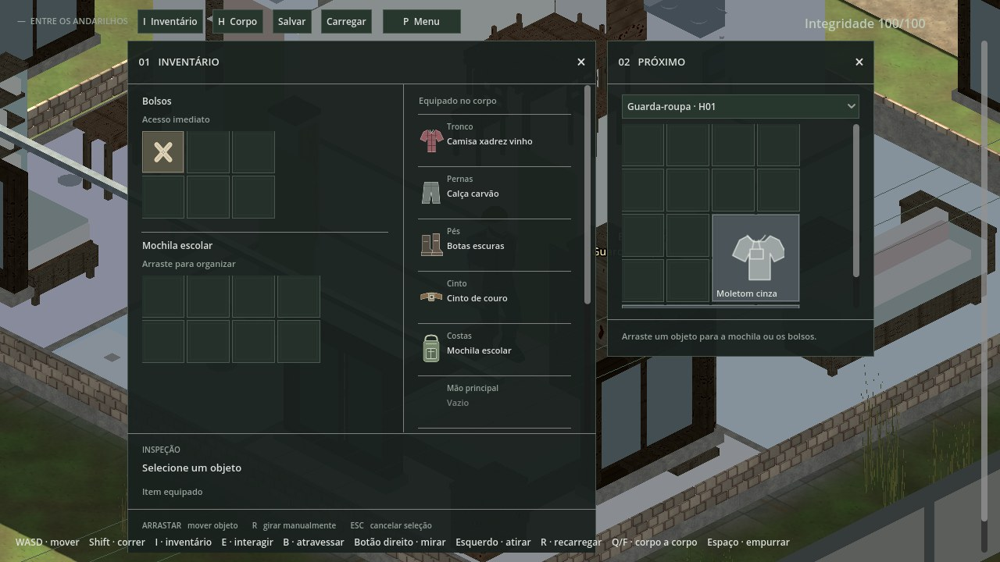

R112 · Fontes físicas e estoques finitos
Primeiro lote de consolidação da exploração/sobrevivência, usando os nove personagens atuais. A demo final permanece com 21. As armas deixam os lotes de laboratório no chão em partidas novas e ocupam células explícitas de armários e gavetas existentes.
Oito móveis / dez compartimentos · 116 verificações no mapa · 27 em processo novo · 32 do abastecimento · 432 regressões sociais.
Relatório e pendências · Resultados · Abrir o projeto publicado
A cópia publicada mantém o diretório de dados da demo pública anterior para ler os saves compatíveis. Seus saves antigos mantêm o inventário e as fontes originais. A geometria integral da H01 e o novo início exterior continuam como próximos lotes; esta entrega não encerra a etapa 2 inteira.
Mochila equipada a partir do guarda-roupa
